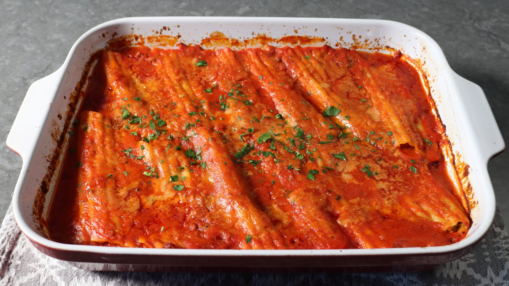

Three-Cheese Broccoli Manicotti

This 3-cheese, saucy, Italian comfort food is loaded with broccoli and
elevated with a bit of hot Italian sausage in the sauce—it's the perfect
culinary combo! The manicotti shells are partially cooked in boiling
water, and they finish cooking in the sauce while the entire dish is baked
in the oven. Like many Italian dishes, this might even be better the next
day! Enjoy hot or cold.
Tips for Making a Great Cheese and Broccoli Stuffed Manicotti
Adding a vegetable to a cheesy, stuffed pasta filling is easy. The hard
part is deciding how much. If you only add a hint, then what's the point?
If we're not really going to taste it anyway, I'd rather just have a
little more cheese. If we add too much, we're just eating vegetable
stuffed pasta, which is not what we signed up for. That's why I enjoyed
this three-cheese broccoli manicotti so much, since I thought it struck
the perfect balance and was just right.
One key tip here is to make sure your broccoli is very well drained after
blanching. There will always be a little bit of water attached, but too
much will dilute the flavor of your filling, and nobody wants diluted
flavor. In the restaurant we'd actually use a salad spinner for larger
batches, which isn't a bad idea, but letting your broccoli drain
thoroughly in a colander is probably sufficient.
The other big decision is how much sauce to bake your manicotti in. I like
to completely cover the stuffed tubes, while others just spoon a little
bit over the top, and then serve extra sauce on the side. You'll have to
make that call, but if you do use the "wet" method, I recommend you thin
the sauce out like I did in the video. And of course you can use whatever
vegetables and cheese you want. But, no matter what you pipe or spoon
inside, I really do hope you give these a try soon. Enjoy!
Ingredients:
- 2 large heads broccoli
- 1 (8 ounce) package manicotti shells
- 2 cloves garlic, crushed
- 1 cup ricotta cheese
- 4 ounces grated provolone cheese
-
1 ½ cups grated Parmigiano-Reggiano cheese, divided, or more to taste
- 2 large eggs, beaten
- 2 teaspoons kosher salt, or to taste
- 1 pinch cayenne pepper, or to taste
- 1 teaspoon freshly ground black pepper
- 1 pinch freshly grated nutmeg
- 3 ½ cups prepared marinara sauce
- 2 ½ cups water
- 6 ounces cooked, crumbled, hot Italian sausage
- 1 tablespoon freshly chopped Italian parsley, or to taste
Directions
Step 1
- Bring a pot of generously salted water to a boil.
Step 2
-
Meanwhile, separate broccoli stems and florets. Cut florets in half and
cut each stem into several pieces lengthwise.
Step 3
-
Place stems in the boiling water and cook for 3 to 4 minutes. Then add
florets and cook until just barely tender, about 3 more minutes.
Step 4
-
Use a slotted spoon to transfer broccoli to a bowl of cold water,
leaving the water boiling on the stove. Let broccoli sit until cool,
about 2 minutes. Transfer to a colander and let sit until very well
drained. Leave the bowl of cold water for the pasta.
Step 5
-
Meanwhile, add manicotti to the boiling water and cook, stirring
occasionally, until tender but slightly undercooked, 6 to 7 minutes. Use
a slotted spoon to gently transfer manicotti into the bowl of cold
water.
Step 6
-
Chop cooled, drained broccoli into small pieces. Transfer 3 cups chopped
broccoli to a mixing bowl and reserve any extra for another use.
Step 7
-
Add garlic, ricotta, provolone, 1 ¼ cups Parmigiano-Reggiano, eggs,
salt, cayenne, pepper, and nutmeg to the broccoli. Mix with a spoon
until thoroughly combined. Cover and refrigerate until needed.
Step 8
- Preheat the oven to 375 degrees F (190 degrees C).
Step 9
- Bring tomato sauce and water to a simmer over medium-high heat.
Step 10
-
Ladle ½ inch hot sauce into a 9x13-inch baking dish or lasagna pan.
Sprinkle in cooked Italian sausage.
Step 11
-
Transfer broccoli filling into a pastry bag. Cut off the tip slightly
smaller than the opening of the manicotti. Gently pipe stuffing into 12
manicotti, being careful not to overstuff. Place stuffed manicotti in
the sauce in the baking dish, angling as necessary to fit.
Step 12
-
Ladle in just enough sauce to barely cover the manicotti. Sprinkle ¼ cup
Parmigiano-Reggiano over top.
Step 13
-
Bake in the center of the preheated oven until hot and bubbly, 25 to 30
minutes.
Step 14
- Garnish with parsley and let sit for 10 minutes.
Step 15
-
Serve two manicotti per bowl, garnished with more Parmigiano-Reggiano.